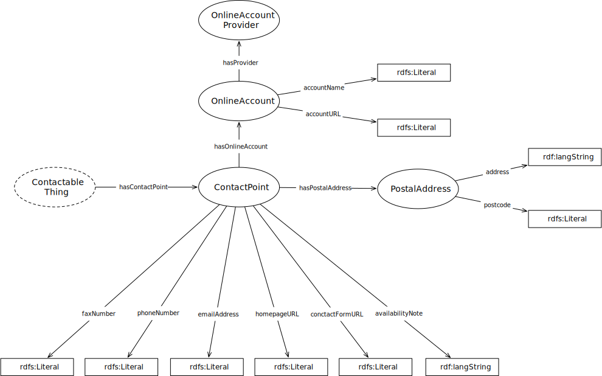

IRI: http://parliament.uk/ontologies/contact-point/ContactPoint
IRI: http://parliament.uk/ontologies/contact-point/ContactableThing
IRI: http://parliament.uk/ontologies/contact-point/OnlineAccount
IRI: http://parliament.uk/ontologies/contact-point/OnlineAccountProvider
IRI: http://parliament.uk/ontologies/contact-point/PostalAddress
IRI: http://parliament.uk/ontologies/contact-point/hasContactPoint
IRI: http://parliament.uk/ontologies/contact-point/hasOnlineAccount
IRI: http://parliament.uk/ontologies/contact-point/hasPostalAddress
IRI: http://parliament.uk/ontologies/contact-point/hasProvider
IRI: http://parliament.uk/ontologies/contact-point/accountName
IRI: http://parliament.uk/ontologies/contact-point/accountURL
IRI: http://parliament.uk/ontologies/contact-point/address
IRI: http://parliament.uk/ontologies/contact-point/availabilityNote
IRI: http://parliament.uk/ontologies/contact-point/contactFormURL
IRI: http://parliament.uk/ontologies/contact-point/emailAddress
IRI: http://parliament.uk/ontologies/contact-point/faxNumber
IRI: http://parliament.uk/ontologies/contact-point/homepageURL
IRI: http://parliament.uk/ontologies/contact-point/phoneNumber
IRI: http://parliament.uk/ontologies/contact-point/postcode
This HTML document was obtained by processing the OWL ontology source code through LODE, Live OWL Documentation Environment, developed by Silvio Peroni.